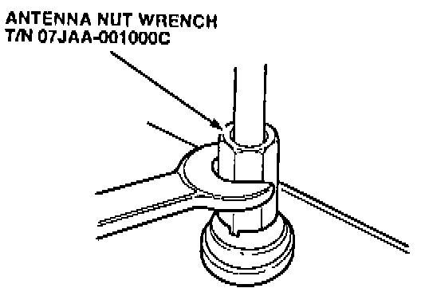
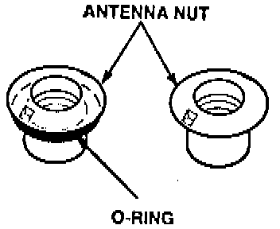
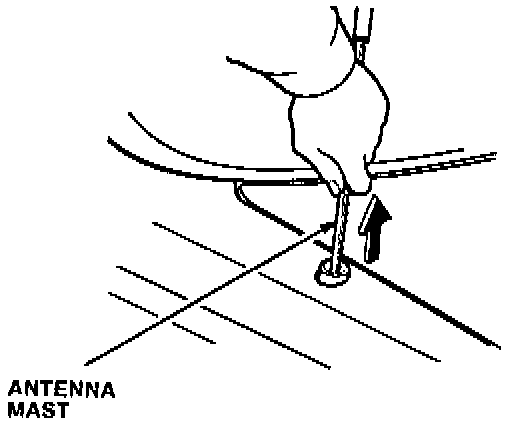
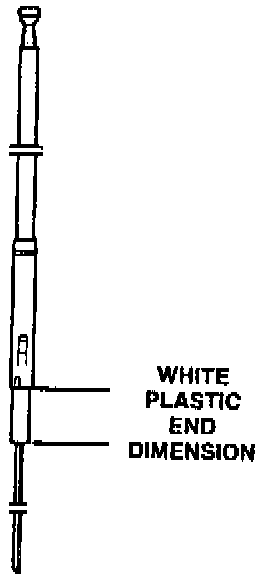
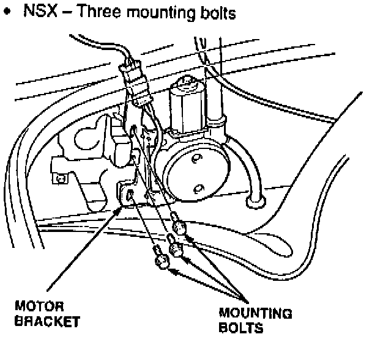
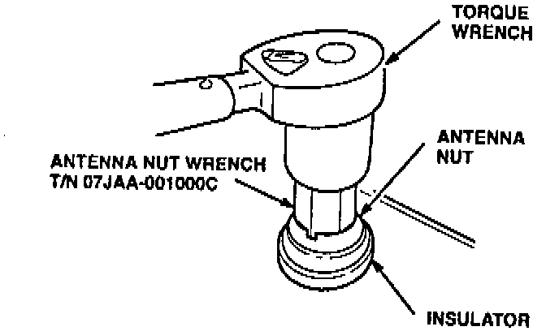

Antenna Mast Replacement

1. Remove the antenna nut with the special tool.

2. NSX only: Inspect the outer diameter of the antenna nut.
^ If the antenna nut does not have an O-ring around the outer diameter, go to Antenna Mast Kit Replacement (NSX Only).
^ If the nut has an O-ring around the outer diameter, continue with step 3.
3. Turn the ignition switch ON; then turn the radio on to extend the antenna mast.

4. Pull the antenna mast out of the antenna tube.

5. Legend only - Inspect the antenna mast to identify which mast to use for the repair. The 1991-92 Legend antenna mast is different from the 1993-94 mast. Some 1991-92 Legends have had the 1993-94 antenna assemblies installed. Make sure that you correctly identify the antenna mast that was removed so you can install the correct mast for the repair.
^ If the mast has four sections, and the white plastic end of the antenna mast is 16 mm long, use the antenna mast assembly for the 1991-92 Legend. Refer to PARTS INFORMATION.
^ If the mast has five sections, and the white plastic end of the antenna mast is 63 mm long, use the antenna mast assembly for the 1991-92 Legend. Refer to PARTS INFORMATION.
^ If the white plastic end of the antenna mast is 29 mm long, use the antenna mast assembly for the 1993-94 Legend. Refer to PARTS INFORMATION.
6. Insert the new antenna mast assembly into the antenna tube; then turn the radio off to retract the antenna mast.


7. Loosen the mounting hardware for the antenna motor assembly.

8. Reinstall the antenna nut; then tighten it to 2.3 N-m (0.23 kg-m, 20 lb.in.) using the special tool and a torque wrench.
9. Tighten all the antenna motor assembly mounting hardware.